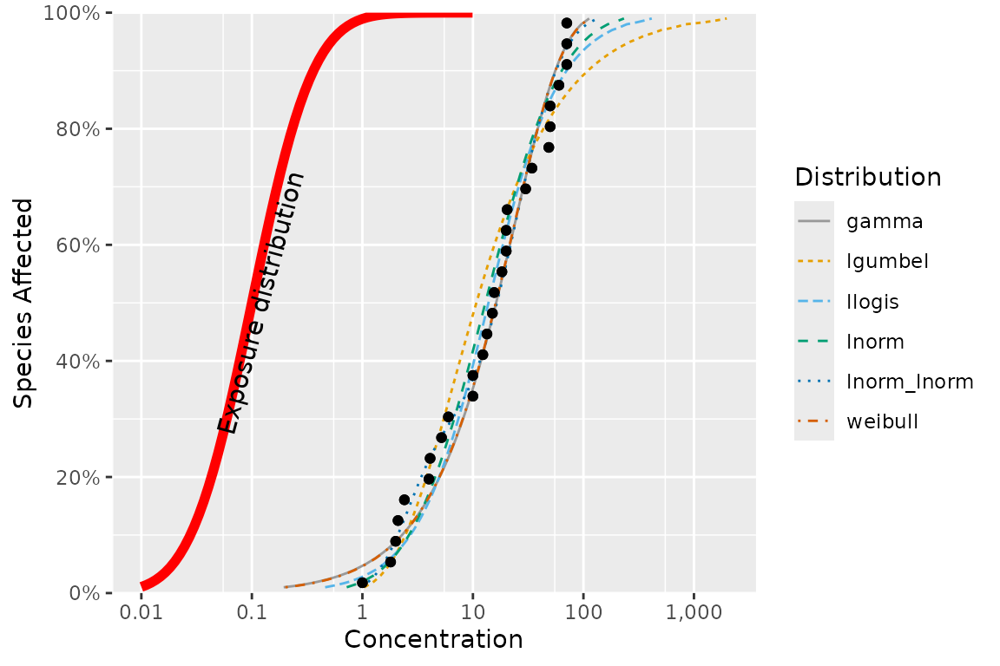

Embellishing Plots with an Exposure Distribution
ssdtools Team
2021-05-14
Source:vignettes/exposure-plots.Rmd
exposure-plots.RmdThe ssdtools package produces a plot of the cumulative distributions for several distribution through the use of the autoplot() function. For example, consider the boron data that ships with the ssdtools package.
library(ggplot2)
library(ssdtools)
data(boron_data)
fit <- ssd_fit_dists(boron_data, dists = c("llogis", "lnorm", "gamma"))
fit.plot <- autoplot(fit)
fit.plot
This graphic is a ggplot object and so can be saved and embellished in the usual way. For example, suppose we want to superimpose an environmental concentration cumulative distribution and compute the exposure risk as outlined in Verdonck et al (2003).
Finding a suitable probability distribution to describe the exposure concentration is beyond the scope of this document – we will assume that this has been done elsewhere. In particular, suppose that the exposure concentration follows a log-normal distribution with a mean of -2.3025851 and a standard deviation of 1 on the logarithmic scale. From the exposure distribution, we construct a data frame with the concentration values and the cumulative probability of seeing this exposure or less in the environment.
Notice that some care is needed because the plot for ssdtools in on the logarithmic base 10 scale and not the natural logarithm base \(e\) scale.
ex.cdf <- data.frame(Conc = exp(seq(log(.01), log(10), .1))) # generate a grid of concentrations
ex.cdf$ex.cdf <- plnorm(ex.cdf$Conc,
meanlog = ex.mean.log,
sdlog = ex.sd.log
) # generate the cdfWe now add this to the plot
fit.plot + geom_line(data = ex.cdf, aes(x = Conc, y = ex.cdf), color = "red", size = 2) +
annotate("text",
label = paste("Exposure distribution"),
x = 1.08 * ex.cdf$Conc[which.max(ex.cdf$ex.cdf > 0.5)], y = 0.5, angle = 75
)
The ssdtools package contains a function ssd_exposure that computes the risk as defined by Verdonck et al (2003) representing the average proportion of species at risk.
set.seed(99)
ex.risk <- ssd_exposure(fit, meanlog = ex.mean.log, sdlog = ex.sd.log)
ex.risk## [1] 0.005595128The risk of 0.0056 can also be added to the plot in the usual way:
fit.plot + geom_line(dat = ex.cdf, aes(x = Conc, y = ex.cdf), color = "red", size = 2) +
annotate("text",
label = paste("Exposure distribution"),
x = 1.08 * ex.cdf$Conc[which.max(ex.cdf$ex.cdf > 0.5)], y = 0.5, angle = 75
) +
annotate("text",
label = paste("Verdonck risk :", round(ex.risk, 5)),
x = Inf, y = 0, hjust = 1.1, vjust = -.5
)
Other embellishments
Other embellishments can be added in a similar fashion using the features of ggplot and are not discussed here.
References
Verdonck, F. A., Aldenberg, T. , Jaworska, J. and Vanrolleghem, P. A. (2003), Limitations of current risk characterization methods in probabilistic environmental risk assessment. Environmental Toxicology and Chemistry, 22: 2209-2213. http://doi.wiley.com/10.1897/02-435.

ssdtools by the Province of British Columbia is licensed under a Creative Commons Attribution 4.0 International License.